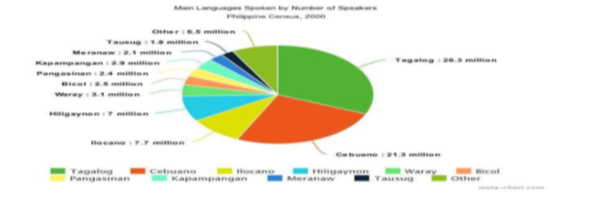
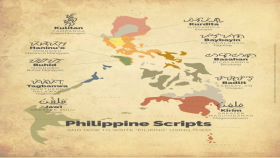
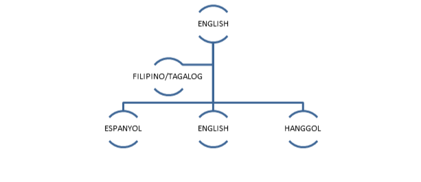

Batay sa awitin na inawit kanina, ano ang kinalaman nito sa pagkakaroon ng maraming wika sa bansang Pilipinas?
Ayon kay Roberto T. Anonuevo, Direktor –Heneral ng Komisyon sa Wikang Filipino (2018), napatunayan ng (wikang) Filipino na kaya itong tanggapin sa iba’t ibang rehiyon at gawing katuwang ng wika ng rehiyon dahil ang komposisyon ng Filipino ay hindi nalalayo sa naturang wika. Ayon kay Dr. Ernesto Constantino at Pamela Costantino, mayroong 100 wika sa Pilipinas.
Makikita sa Grap ang mga porsyento o dami ng tao na nagsasalita sa wikang kanilang kinasanayan. Ang mga wika na nasa Grap at ang Sampong (10) ng wika sa Pilipinas na ginagamit ng nakararaming mamamayan.
Batay naman kay Lorenzo Hueves y Panduro (1784), bago pa ang kolonyalisasyon, ay pamilya ng Malayo-Polinesyo ang wikang Filipino. Sa Pananaliksik nina Costantino at Wilhelm Schmidt (1899), na Awstronesyan ang pamilya ng wika ng kinabibilangan ng mga wika sa Pilipinas.
Sa larawan, makikita ang mga sinaunang paraan ng pagsulat sa iba’t ibang probinsiya ng Pilipinas. Kung mapapansin ninyo, magkakamukha ang mga paraan nila ng pagsulat. Katunayan ito na maraming naging kamag-anak ang mga wika sa Pilipinas tungo sa ibang bansa.
Pagpasok ng Ibang Wikang Kolonyal sa Pilipinas:
Makikita sa Grap kung paano nakulong ang wikang Filipino sa wika ng ibang bayan batay sa kung paano ito namulaklak sa kultura at wika ng Filipino. Ang pagiging Multilinggual ng Pilipinas ay naging instrumento upang magkaroon ng adaptasyon ang wika ng ibang bayan sa wikang Filipino.
Mga bansang Multilingual:
Hamon ng Mother-Tongue-Based Multilingual Education:
Habang nililinang at pinauunlad ang Filipino, nang naluklok na Pansamantalang Punong Komisyoner ng KWF si Dr. Ricardo Ma. Duran Nolasco, naging direksiyon ng ahensiya ang pagtangkilik sa multilingguwalismo. Katuwang ang Kongresista o Representatibo na si Kgg. at Abugado magtanggol Gunigundo ng Valenzuela, ang Orihinal na House Bill Blg. 4719 na humihikayat na ipagamit ang unang wika bilang midyum ng pagtuturo sa mga basikong edukasyon. Kinatigan ito ng Kagawaran ng Edukasyon at Isport sa pamamagitan ng paglalabas ng Ordinansa Blg. 74 na nagtatalakay sa pagsasainstitusyon ng paggamit ng unang wika ng mga mag-aaral.
Napakalaki ng naging epekto ng pangsasakatuparan ng Mother-Tongue-Based Multilingual Education o MTB-MLE. Isa ito sa mga naging bagong direksyon sa pag-iimplementa ng K to 12.